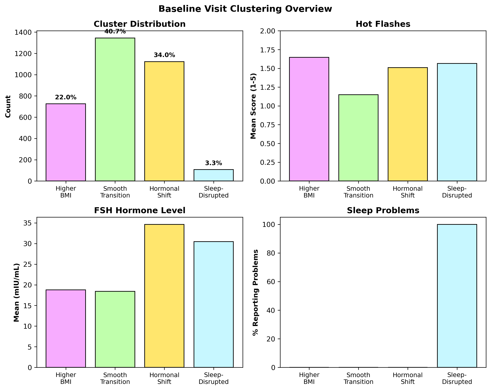

The Women of SWAN: Exploring Diversity in the Menopause Journey
Not All Menopause Journeys Begin the Same
Welcome to the SWAN Study
Over 3,302 women participated in one of the most comprehensive studies of menopause ever conducted. This is their story.
Meet the Women
The Study of Women’s Health Across the Nation followed midlife women from 1996 to 2008, capturing their experiences through one of life’s most significant transitions.
These women came fromseven diverse communities across America.
Each siterepresented different racial and ethnic backgrounds, from Detroit to Los Angeles.
Together, they paint a picture of menopause that reflects the true diversity of American women.

While every woman’s journey is unique, some experiences are nearly universal.
Hot flashes affect 67% of all women in the study.
Sleep disturbances and mood changes follow close behind.
But here’s where the story gets interesting…

Not All Journeys Are the Same
Our analysis revealed something surprising:women don’t experience menopause on a single path.
Using machine learning, we identifiedfour distinct patterns of menopause experiences.
The largest group started with the healthiest baseline symptoms.
But they had the lowest bone density and experienced the largest increase in hot flashes over 10 years.
This group entered menopause transition earlier than others.
Their hormone levels told the story—FSH levels nearly 7x higher at baseline.
Higher BMI doesn’t always mean worse health outcomes.
This cluster had the highest bone density and fewer symptoms despite elevated BMI.
Notably, 54.5% were Black women—double their representation in the overall sample.
A small but severely affected group.
Every single woman in this cluster struggled with sleep—a reminder that for some, menopause is truly debilitating.

Cluster 1: Low Baseline (41% of women)
Key Characteristics: - Median FSH: 4.5 - Lowest depression scores
- 49.1% Japanese women - Lowest bone density (0.925)
Cluster 2: Early Shift (34% of women)

Key Characteristics: - Highest baseline FSH: 33.5 - Early transition markers - Mid-range bone density - Moderate symptoms
Cluster 3: Higher BMI (22% of women)

Key Characteristics: - Average BMI: 38 - Highest blood pressure (132 mmHg) - Best bone density (1.079) - Fewer reported symptoms
Cluster 4: Sleep-Disrupted (3% of women)

Key Characteristics: - 100% reported sleep problems - Highest depression scores - Largest BMI increase over time - Multiple compounding symptoms
How Their Bodies Change
These clusters didn’t just differ at baseline—they followed different paths over 10 years.
Hormones Tell a Story
FSH levels rose dramatically for the Early Shift cluster—from 33.5 to nearly 120.
All groups converged around 117 mIU/mL by Visit 10, a shared biological endpoint.
Depression Diverges
While most groups saw decreasing depression, the Sleep-Disrupted cluster’s mental health worsened.
Hot Flashes Intensify
The Low Baseline cluster—who started with almost no hot flashes—saw the steepest increase.
By Visit 10, they caught up to other groups. Menopause eventually affects everyone.

Why It Matters: Race and Health Disparities
These patterns aren’t random.Race and ethnicity shape the menopause experience.
Black women report hot flashes at twice the rate of Japanese women (80% vs 35%).
The Higher BMI cluster is 55% Black women—a stark reminder that health disparities have deep roots.
These differences aren’t just biological—they reflect systemic inequities in healthcare access, stress, and social determinants of health.

Your Journey
So where do you fit in this landscape?
Use this interactive tool to explore which cluster profile most resembles your experience.
Input your symptoms, demographics, and health markers.
Discover your cluster and see what trajectories others like you have followed.

The Takeaway
There is no “normal” menopause.

These 3,302 women taught us that menopause is as diverse as the women who experience it.
Some journeys are smooth. Others are turbulent. Many fall somewhere in between.
But every woman deserves care that recognizes her unique path—not a one-size-fits-all approach.
About This Project
This visualization was created by Team SWAN (Esha Choudhary, Kristen Donahue, Khushi Raj Mittal, Rabab Fatma, Mickey Lin, Mengting Tu) for a Data Visualization course.
Data Source: Study of Women’s Health Across the Nation (SWAN), ICPSR 28762, 30501, 32961
Methods: K-means clustering (k=4) on baseline health metrics, longitudinal trajectory analysis across visits 0, 5, and 10.
Learn More: [Link to your GitHub repo or full documentation]
:::